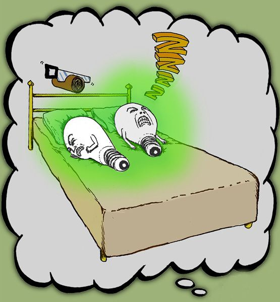

Let's start with the word, standard.
For most people, standard has positive connotations. Consider the words that we use together with standard: From COCA, we get collocations such as gold standard and quality standard. There are standards of living and standards of care. If you have high standards or exceed them, that's a good thing. We have educational standards, environmental standards, and technology standards, which are supposed to make our education, environment, and technology better.
As a result, when we see Standard English (note the capital S), it would not be surprising if that evoked positive associations. You would be excused for thinking that Standard English is "good" English. You may have the idea that Standard English is basically grammatical English, or formal, or literary English. It is none of those things.
You're certainly old enough to know what a VHS is. What you my be too young to know, though, is what Betamax is. Back in the early 1980s, they were competing video tape standards . By most criteria, Betamax was a higher quality product. It had a better picture and better sound. Nevertheless, it died so long ago that you may never have heard of it, and VHS became the standard for video cassette tape and players. Standard doesn't mean good, it just means standard.
Standard rail gauge is 1,435 mm wide. Toronto gauge is 1,495 mm wide. Each size has benefits and drawbacks, but the main benefit of standard rail gauge is that it is standard. It is the most commonly used, and so if you want new rail cars, it's much easier to get them if you use a standard gauge.
In fact, standards are one of the things that underpin our modern world . In many cases, however, another standard would be just as good, A4 paper is neither better nor worse than US Letter, but in most of the world it is better because it is the standard, and in North America, US Letter is better because it is the standard.
That's almost how you should think about Standard English. Any other English could be the standard if it were standard.
But there are two important differences between technology standards and language standards. First, a technology standard is predefined. Somebody planned it out. Language isn't like that. If you don't follow a technology standard, your technology probably won't work. A TTC streetcar, for instance, simply will not run on standard gauge rails. It's useless as a means of transportation. Similarly, a VHS cassette simply will not play on a Betamax player.
In contrast, much of the time – perhaps most of the time – non-standard English works perfectly well. There are dialects and varieties that you or I cannot understand – or cannot understand easily – but there are so many more that we can. If communication is the main function of language, then, why do we have Standard English?
The answer is that another function of language is to regulate group membership. In other words, language helps us to identify people who are like us, who belong to our group.
Consider clothing. Jeans are standard clothing at Humber. Some people wear suits or dresses, which are more formal but still standard ways of dressing. Arriving topless to class might be perfectly functional if the classroom is warm, but it's not standard, and people will react to your choice of outfit. A snowsuit is also non-standard, as is a sari, a kimono, or a kilt. Some people on campus will react positively and some will react negatively. Many will suppress any outward reaction, but everyone will recognize that these ways of dressing are non-standard.
That's kind of the way it is with non-Standard Englishes. It is a social standard, and it has social implications. Usually those are negative, and as language teachers we need to be intensely aware of what standards we are supporting and what effect that has on our students and on equity-seeking groups.
George Eliot presents the following conversation in her novel Middlemarch .
"...All choice of words is slang. It marks a class."
"There is correct English: that is not slang."
"I beg your pardon: correct English is the slang of prigs who write history
and essays. And the strongest slang of all is the slang of poets."
She knew the difference between "correct English" and Standard English. But many people don't.
Unfortunately, there is no brief definition of Standard English. In fact, one goal of the first half of this course is to outline a partial definition of its syntax. But we can make a few remarks about its dominant status.
To some degree any dialect is a standard, but most are not called "Standard English". If you try to sell a Standard gauge train to the TTC, you will not make a sale because that is not the Toronto standard. If you grew up speaking First-Nations English , then First-Nations English is likely the standard in your home community; anyone who goes to your community and speaks Standard English will be treated differently than those who speak First-Nations English because they are not using the standard in that community. Differently can mean better or worse or just differently. The special thing about speaking Standard English is that it would rarely occur to you that you might be discriminated against because of it.
But let me reiterate that this is not because Standard is better, more formal, or even most common (though it is more common is particular communities). It is not synonymous with grammatical or correct. Nor does it imply truth, logic, beauty, purity or clarity. It is not how English ought to be spoken. It is just a cluster of dialects, albeit a powerful one, and a norm that is enforced by the dominant social group of English speakers. In much of the world, that means highly educated speakers of English from Britain and the British colonies where the Indigenous peoples were largely displaced by British colonists (e.g., Canada), and not those where the Indigenous peoples were not (e.g., Bangladesh).
There is a story about the gate-keeping function of dialects in Judges, the 7th book of the Hebrew bible, which goes like this.
Jephthah then called together the men of Gilead and fought against Ephraim. The Gileadites struck them down because the Ephraimites had said, “You Gileadites are renegades from Ephraim and Manasseh.” The Gileadites captured the fords of the Jordan leading to Ephraim, and whenever a survivor of Ephraim said, “Let me cross over,” the men of Gilead asked him, “Are you an Ephraimite?” If he replied, “No,” they said, “All right, say ‘Shibboleth.’” If he said, “Sibboleth,” because he could not pronounce the word correctly, they seized him and killed him at the fords of the Jordan. Forty-two thousand Ephraimites were killed at that time. –Judges 12:4
From this story, we get the English word Shibboleth .
When I was first hired as an English teacher, it wasn't because of my qualifications. I had none. Nor was it because of my experience. As I said, it was my first teaching job. Nevertheless, I arrived in Japan in November of 1992, and within two weeks, I had been hired. I assume this was I because I am a "native speaker" of Standard English. Being white probably helped, too. Maybe even being male.
As someone who grew up speaking English, I was obviously a competent user of the language, but I had little explicit grammatical knowledge. Most schools in Canada teach essentially nothing at all about English grammar. That was true in the 1970s and 80s, when I was in school, and it remains true today. I was lucky in that I was among the first wave of French immersion students, and so I knew something about (French) grammar at least. But this was only the tiniest help to me when I tried to address my students' questions.
"Why do you use the present continuous here, but the present simple there?" "When do we need the?" "Why do we askwho does she know but not usually who does know her?" To all of these questions, I could say little more than, "it sounds right." I had strong intuitions about what was grammatical and what was not, but I had no way of conveying those intuitions to my students in any systematic and generalizable way. I'd never even thought about what it means for something to be grammatical or not.
At this point, you – yes, you – already have much more explicit knowledge of English grammar than I did. In fact, you probably have more explicit knowledge about English grammar than the average Humber professor. If a student asked you about the determiners in I had coffee and a piece of toast for breakfast, you can tell them that coffee is an non-count noun, so it doesn't require a determiner, but, as a singular count noun, piece can't go without. You know something about English grammar. So you're way ahead of where I was when I started out.
But you still probably haven't thought about what it means for something to be grammatical. This is what I'd like to explore here. Before we dive in, though, just a few words about the fallacy of monosemy. If a word is monosemic, it has a single meaning. This is the idea at play when a child asks, "can I go to the toilet," and the teacher responds mockingly, "I don't know, can you?" The teacher acts as though can really has only one meaning, "ability", when in fact can has multiple meanings .
We don't need to pretend that grammatical has only one true meaning, but clearly it doesn't mean just anything. How do we establish the meaning of grammatical? This comic explains (click for the full comic).
So, spend some time thinking about what grammatical and ungrammatical mean to you.
I would say that, if something is grammatical, it does not breach the appropriate syntactical and morphological constraints. But that just brings up new questions: what are those constraints and what does it mean to breach them? So, are we reduced to Wittegenstein's idea that language is use, that whatever we generally say is grammatical is grammatical? Well, yes, but that's of no help you or your students, so I would like to consider some examples.
Let's start with an easy one.
(1) seems unequivocally ungrammatical. But why? No, really, why? You feel that it is ungrammatical. You have that intuition, but if I claimed that this is actually grammatical, how would you prove me wrong?
We could start with cookie and say that, as a singular, countable noun, it needs a determiner and it doesn't seem to have one. An NP like my could function as a determiner, but me doesn't function that way. You could look at key and ask yourself whether it's a noun or a verb. If it's a noun, then there is no verb, and if this is supposed to be a clause, it needs a VP as its head. So, let's assume key is a verb. That makes you the subject. So, perhaps me is an object:NP and cookie is another object, albeit an ungrammatical NP (missing a determiner). But then we need to consider the function of there. Presumably, it's a modifier in the VP (pronoun me cannot be modified by there). But a modifier in a VP can't typically come between the head and an object. And we can't find a match for the meanings of the verb key that work with two objects.
But perhaps it's simpler than that. Maybe it's ungrammatical because it doesn't make sense. Could it be that grammatical language always makes sense? Could it be that something that makes sense is grammatical (these are not the same claims.) As critical thinkers, we need to try to disprove our ideas. We could do this by creating a grammatical utterance that makes no sense and comparing it to an ungrammatical utterance.

Chomsky (1957 [2nd edition 2002]) claims that neither (2) nor (3), nor their subparts, would occur in a corpus of English, they would be “equally ‘remote’ from English” “in any statistical model of English” and that they are equally ungrammatical. But Pereirra (2000) showed that (2) is much more statistically likely than (3), which matches my intuition (and yours too, I assume). In fact, I would go so far as to say that (3) is nonsensical and ungrammatical but that event though (2) is nonsensical, it is grammatical. So I would say (2) disproves the idea that all grammatical language is meaningful. What do you think?
Next, we'll consider the converse, that all meaningful language is grammatical. Before we do, try to think of something that is ungrammatical but has a clear meaning.
Now consider (4).
This example was heard by my friend, Geoff Pullum, in an interview on NPR. As he explains in this blog post , the woman was Turkish. Her meaning is clearly that Pope Jean Paul is a very, very good pope or perhaps a very, very good person. But for this to be grammatical in English, we need a clause, with a subject and a head. That head should be a VP, which means we need a verb, presumablybe, but seem or become would also be possible.
It seems, then, that something can be grammatical but not meaningful and meaningful but not grammatical. Meaning, it seems doesn't have much to do with it.
Perhaps, then, we just go by the rules in grammar books.
As you can tell by the star, I think (6) is ungrammatical but (5) is grammatical. I assume you agree. The rule that explains this does appear in a grammar book, but not before 2002. But I also assume that you would agree that you've never read that rule, and the grammaticality of (5) and (6) didn't change in 2002. I guess we can set that idea aside then. Many rules are not mentioned in grammar books. In fact, many languages exist without any linguist having written a grammar for them.
Now consider (7)
I think you'll agree that this is a very strange sentence, almost like an optical illusion, feeling grammatical and ungrammatical at the same time. The reason is thought to be the result of something called island constraints , which are thought to apply to all languages, though there is some debate about this. This could be something processing constraint in our brains, or it could be something about how information can be structured. Fortunately, if this is true, then you'll never have to explain it to your students, because nobody would try to use a sentence like this.
So it seems that our processing ability may help us decide what is grammatical and what is not.
Now consider which image matches (8).
Many people say this is the first suitcase, but that is incorrect. The first suitcase is packed. The other one has been unpacked. It seems that our processing ability isn't all that great sometimes. So, maybe we can't even rely on instinct to judge what is grammatical.
What about (9)?
I expect this seems ungrammatical to you, but you may have noticed that there is no star. What if we change raced to ridden? Now it is clearly grammatical (if it's net yet clear, it means "the horse that was raced past the barn fell"). The problem you had with (9) was that you interpreted raced as the past-tense form rather than that past-participle form. Again, maybe our instinct isn't 100% reliable. Sometimes, we need to think it through.
This is ungrammatical in North American English but grammatical in UK English. As we discussed before, the reason is that we are operating under different cultural assumptions about the relevant metaphor for weekend (North Americans see it as a platform on which events play out, while people in the UK see it as a point at the end of the week.)
This is another example of a dialectal difference. It's not grammatical in Standard English, but it is in other varieties. And it USED TO BE grammatical in Standard English, too.
This is fully grammatical in all dialects, but it belongs to an informal register. The more formal version would use Mia and I. This is a shibboleth for some people.
Generally things that are grammatical are meaningful and vice versa, but not always. Many of the rules are described in grammar books, but many aren't, and often the description in grammars are incorrect. Expert users of English can generally rely on our intuition to know what is grammatical, but our intuition can be fooled. Sometimes, an explanation helps us to see something we didn't before. So, what makes grammatical grammatical?
Just like soup, there is no single thing. There seems to be a combination of what is expected, what is meaningful, and what is processable, but none of these things has to be there.
Chomsky, N. (2002). Syntactic structures (2nd ed.). Mouton.
Pereira, F. (2000). Formal grammar and information theory: Together again? Philosophical Transactions of the Royal Society A: Mathematical, Physical and Engineering Sciences , 358(1769), 1239–1253. https:// doi.org /10.1098/rsta.2000.0583
If you would prefer to read the transcript, the original can be found here .
Note that this talk is from 2007, and many online dictionaries have changed since then.
”A normative statement is one that deals not with how things are but how they ought to be, or how it is appropriate for them to be given some set of values.”
|
Normative |
Positive |
|
|
|
|
|
|
|
|
Are the rules of English grammar normative? If so, what do they tell us about how we ought to speak?
Pullum observes
One last point about normativity is that it often presumes a population in which the norm applies. Before, we we said that grammaticality is a combination of meaning, expectedness and processability, we're missing part of the picture, or at least we're taking it for granted. That is the audience. When we say something is meaningful, we mean it is meaningful to somebody. When we say something is expected, it is expected by somebody. That somebody is a key piece here, and generally that somebody is the social group of Standard English speakers.
To the extent that our students wish to gain access to the social group of SE speakers, it's clear that we should facilitate that. But the facilitation goes two ways. The standard way is to put the burden on students to conform. That's how most English teachers see our jobs. Of course, there is value in teaching them about SE and giving students the tools that would allow them access to the social group of SE speakers, should they wish or need to join. But there is another way, and that is to help SE speakers to accommodate, include, accept, and welcome users of other varieties of English. Needless to say, we do much less of this (or, perhaps, almost none at all). But as English-language teachers, we should consider how we may go about promoting such attitudes.
This essay by bell hooks appears in her book Teaching to transgress. Read it at your own risk!

hooks, bell. (1994).Teaching to transgress: Education as the practice of freedom. In Choice Reviews Online (Vol. 32, Issue 08). Routledge. https://doi.org/10.5860/choice.32-4628